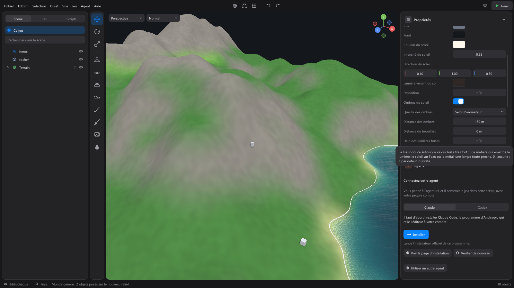
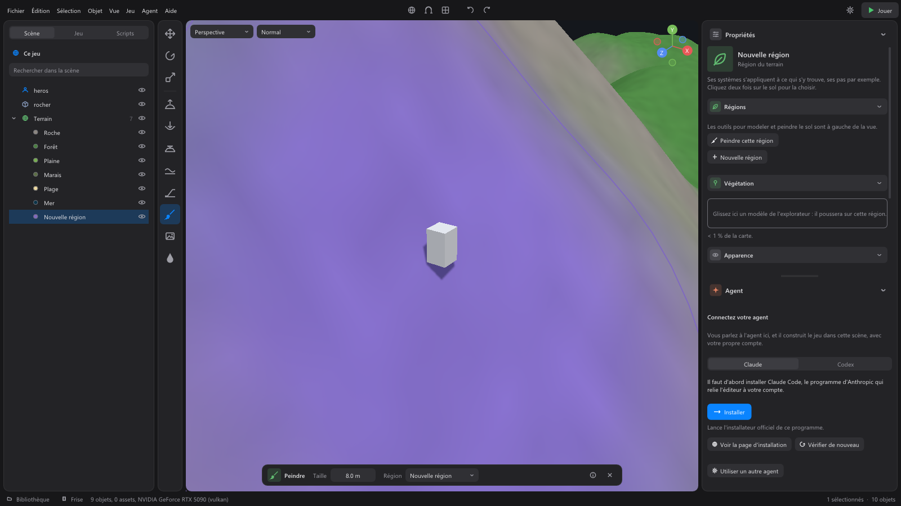

The terrain¶
Without a terrain, a scene's ground is made of your objects (a large plane, tiles). A terrain is a map with relief, regions (forest, beach, snow...), water and vegetation, which you generate, then touch up with brushes.

Generating a world¶
Deselect everything (or click the game row, at the very top of the Scene tab): the properties show the Terrain section. Set it up, then click Generate a world.
| Setting | Effect |
|---|---|
| Size | The side of the square map: 256 m, 512 m, 1,024 m, 2 km or 4 km (see Large maps). |
| Relief | 0: almost flat. 1: hills and mountains. 2: very steep. |
| Relief details | How many bumps and hollows there are between the large shapes (0 to 1). |
| Max. altitude | The height of the highest peaks, with a relief of 1. |
| Coast level | Below this share of the altitude: beaches and swamps, which water will cover. |
| Shape | Land to the edge, One continent, Several continents or Archipelago: land up to the edge of the map, or surrounded by a sea that reaches the horizon. |
| Sea | A sea at coast level: it covers everything lower. Always there around continents or islands. |
| Seamless edges | The left edge continues the right one, the top continues the bottom: a map that can one day wrap around the world. (The game does not cross from one edge to the other yet.) |
| Regions | Snow, Rock, Forest, Grassland, Desert, Swamp, Beach. Uncheck the ones you don't want: their areas take the most fitting neighboring region. A map keeps at least one region. |
| Variant | A number: the same variant gives the same world. The Another variant arrow draws one at random. |
The terrain becomes the scene's Terrain object, with its regions and water stored inside. Objects already placed are set again on the new relief.
With a terrain, this section is called Relief, regions and sea (on the Terrain object) and its button Generate again: it replaces the relief and regions, but region objects keep their name, color and systems. Remove the terrain deletes it. Ctrl+Z goes back in both cases.
Importing a relief¶
Import a relief (in the same section) makes the map from a heightmap: a grayscale image where white is the highest, like relief tools (World Machine, Gaea) and real-data converters make.
- Files: a PNG image, preferably 16-bit (65,536 heights instead of 256: no steps on gentle slopes), or a raw .raw or .r16 file (16-bit heights, no header, in PC byte order; .r8 for 8-bit). The image must be square.
- The box that follows shows the image ("1025 × 1025 points, 16-bit") and asks how to lay it out:
| Setting | Effect |
|---|---|
| Meters per point | The distance between two points of the image: 1,025 points at 1 m make a 1,024 m map. A map is at most 4 km per side. |
| Black altitude | The altitude of the image's black points, in meters. |
| White altitude | The altitude of its white points. |
- Import lays out the relief. Regions and sea follow the Generate a world settings (the checked regions, the coast level, the sea, the variant), as for a generated world. Placed objects are set again on the new relief, and Ctrl+Z brings back the old terrain.
- An image whose number of cells (its points minus one) is not a multiple of 64 is resampled: the map keeps its size in meters.
Large maps (2 and 4 km)¶
Beyond 1,024 m, the map is a large map. It is set up, sculpted and painted like the others; only the way it is drawn changes:
- The ground is drawn in detail around the camera: up to 1 km in High quality, 500 m in Low quality (the quality is chosen from the graphics card). Further away, a simplified relief (one height every 4 m, its colors to within 4 m) takes over. As the camera moves, the detail loads little by little, without stutter.
- Generating a 4 km map takes a few seconds.
- In game, the ground is touched in 256 m squares, as a single piece: the player and characters cross from one to the next without noticing.
On every map, the relief is simplified in the distance: each 64 m piece is drawn with 64, 32, 16, 8 or 4 tiles per side, depending on how much of the screen it covers. It only changes detail when the relief's difference stays under one point of the screen (one and a half in Low quality): the difference cannot be seen. Under the edges of each piece, a skirt (a vertical strip of ground, normally invisible) fills the cracks that would open between two levels of detail.
The Terrain object¶
Select Terrain in the scene list (or click the ground, or Edit the terrain in the game's settings). Its properties:
- Position and size: the terrain moves, but does not turn or change scale;
- Relief, regions and sea: the generation settings above;
- Regions: New region creates a region of your own, to paint wherever you like (name it, give it its color and systems). The new object is selected, and the Paint tool taken;
- Blend between regions: the width of the blend from one region to the next (0: sharp borders);
- Systems: a system placed on the Terrain applies to all its regions.
Sculpting and painting¶
With a terrain in the scene, the tool column on the left of the view shows seven tools: Hill, Dig, Flatten, Smooth, Ramp, Paint, Fill. With a tool taken, the left click in the view sculpts instead of selecting. Each tool and its options bar (Size, Strength, Region) are detailed in The 3D view.

- While sculpting, slopes too steep for the player show in red.
- Ramp: drag from one point to another for a path with an even slope.
- Fill: click at the bottom of a hollow; water fills it up to its rim and becomes a Lake ("Lake created: its surface is at 12 m"). Nothing fills if the water would run off: dig a hollow first.
- Each brush stroke is undone with Ctrl+Z. Esc puts the tool down.
- Materials: cover the ground with real materials (grass, rock, snow, sand...) and paint them with the brush. See Materials.
Regions¶
Each region is an object stored in the Terrain, with a dot of its color in the list. In the view, a first click on the ground selects the Terrain, a second the region under the mouse. Its properties:
- what it covers ("23% of the map");
- Regions: Paint this region takes the Paint tool with it;
- Vegetation: see below;
- Appearance: its Color;
- Systems: they apply to what stands in it. For example the Sounds system and its surface setting: footsteps that crunch on snow.
Deleting a region (Del key) asks which region will take its areas ("Its areas will take this region:"). Its object goes with its systems; Ctrl+Z brings everything back. The terrain keeps at least one region.
Water¶
The Sea and each Lake are objects stored in the Terrain. They cover what is lower than their level.
- Style: Realistic (fine waves, reflections, see-through water) or Stylized, for a low poly game (see below).
- Kind of water: a ready-made water, Sea, Stormy sea, Lagoon, Lake, Pond, Low poly sea or Low poly lake: the swell, the colors, the clarity and the foam at once (the last two also switch to the Stylized style). Everything stays adjustable afterwards.
- Level: the height of the surface. Higher, the water covers more land.
- Waves: the height of the largest waves. 0: calm water, like a mirror.
- Wave length: from one crest to the next. Short, a chop; long, an ocean swell. Shorter waves are always added on top.
- Swell direction: where the waves go, in degrees.
- Choppiness: the wind on the water, from 0 (round, regular waves) to 1 (sharp crossing crests, foam).
- Deep water color and Color near the shores: the water goes from one to the other with its depth.
- Clarity: how far one sees through the water. Near the shores the bottom shows; further out it fades into the water's color.
- Foam: on the crests, along the shores and around whatever touches the water (a rock, a pier, a floating crate).
- Wakes: the V opening behind a boat, the churned water in its wake, the rings around a swimmer or a floating crate. They are only drawn. 0: none.
- Systems: they apply to whoever walks in it (splashing steps).
Water reflects the sky, the sun and the scene's lights (a lamp by a lake draws its reflection on it); in High quality it also reflects the scenery, shows the bottom slightly bent by the waves, and the sun draws moving light patterns on it (caustics). The waves move with game time: what you see is what physics makes float.
In deep enough water, the player swims, at its Swim speed (in its properties): they follow the surface, rise and fall with it, and moving water gently carries them along. Del removes a body of water.
Stylized water¶
For a low poly game, choose the Stylized style: the surface is made of flat facets, triangles laid on a fixed grid of the world, lifted by gentler, more readable waves; each facet takes its shade from its slope facing the sun. The colors go from the Color near the shores to the Deep water color in crisp steps, the foam lines the shores and whatever touches the water with a crisp band, the highest crests turn white and wakes are drawn as foam lines. The water reflects the sky and the sun (as a crisp spot), not the scenery, and shows the bottom without bending it. Its extra settings:
- Facet size: the side of the triangles, in meters. Large, very low poly water; small, more detail.
- Facet strength: at 1, each facet has its own shade; toward 0, the surface smooths out, with the same waves.
- Color steps: the number of shades from the shore to the open water (0 or 1: a smooth gradient).
- Foam width: the width of the white band along the shores and around objects.
The style does not depend on the render quality: stylized water stays stylized on a powerful computer. The quality only sets its cost: in High, a second foam band comes and goes beyond the first, and placed lights draw their reflection on it; in Low, the sea has a coarser mesh. At equal quality, stylized water costs less than realistic water. Floating and swimming things follow the drawn facets.
What floats¶
Water carries what moves: the objects of the Physics system float, sink or stay in between, by their In water setting; the water slows them down, rocks them with the waves and carries them when it moves. The pieces of a broken object do the same, and a rag doll floats. A boat sails on it and runs aground on land. The fluid is not simulated: the water's surface carries things, which stays light for the computer.
Vegetation¶
To grow trees, bushes, grass or rocks on a region:
- Select the region.
- Drag a model from the library onto the area of the Vegetation section ("Drop a model from the explorer here: it will grow on this region.").
The model becomes a plant kind, an object stored in the region, and grows over the whole region. Drag other models to grow several kinds. The region's Vegetation section lists its kinds and their number of plants; a click selects one.
A plant kind's properties ("It grows on its region. Its settings and systems apply to all its plants."):
| Setting | Effect |
|---|---|
| Density | The number of plants per 100 m². Changing the density resows: hand edits may no longer land on the same plants. |
| Min. size, Max. size | Each plant takes a random size between the two. |
| Max. slope | Nothing grows on steeper ground. |
| Sink into the ground | Each plant rests on the lowest ground under its base, then sinks this much: its base seems to come out of the ground. |
| Visible up to | Beyond this, it is not drawn: closer makes the game faster. In Low quality (an integrated chip), plants stop at 60 % of this distance. |
| Reseed | New places for all its plants. Hand edits are forgotten. |
| Trunk (In game section) | The diameter that stops the player in the game. 0: walked through (grass, flowers, bushes). |
- Select all its plants: to edit them or give them a system together.
- Put all plants back: forgets the hand edits (if there are any).
- Stop growing it: removes this plant kind.
- A system placed on the plant kind applies to all its plants: for example Gathering, for trees to chop down.
Editing a plant¶
A plant is selected with a click in the view, or in the scene list, under its plant kind (with the word "plant"). Ctrl + click and the rectangle take several. It is not a scene object, but it is edited like one and keeps its edit if the terrain changes:
- Position, Rotation, Size, or the gizmo;
- Place on ground (End);
- Put back in place: as sown, with its original place, rotation and size;
- Erase (Del): it will not grow back, even if the terrain changes;
- Make it an object: it leaves its plant kind and becomes a scene object, in the same place. Not needed to give it a system;
- Select its plant kind;
- Systems: a plant can carry its own systems, and stays a plant.